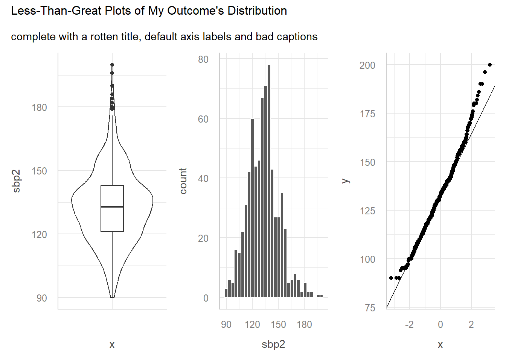
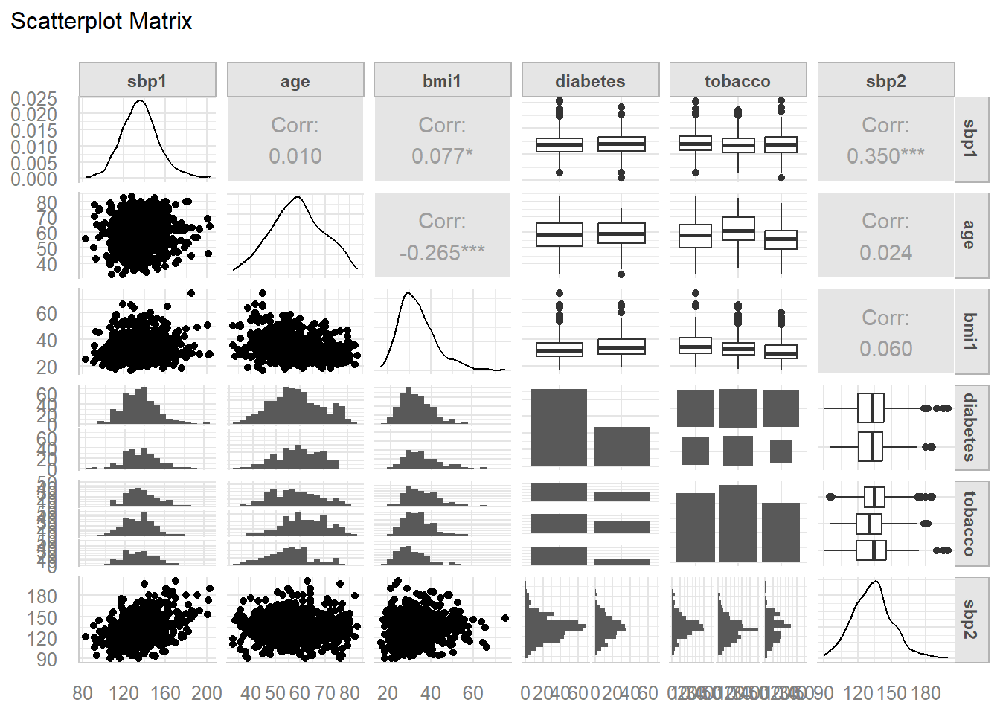
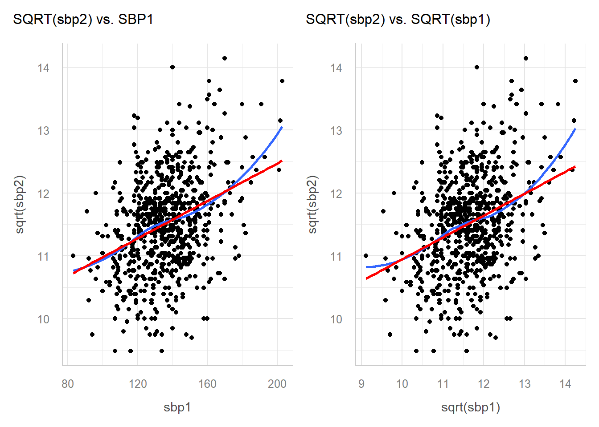
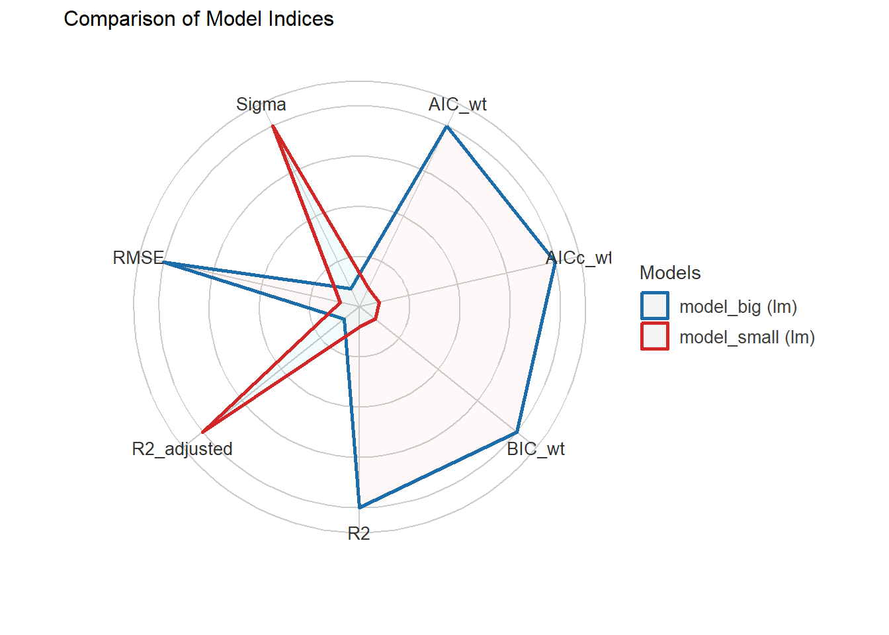
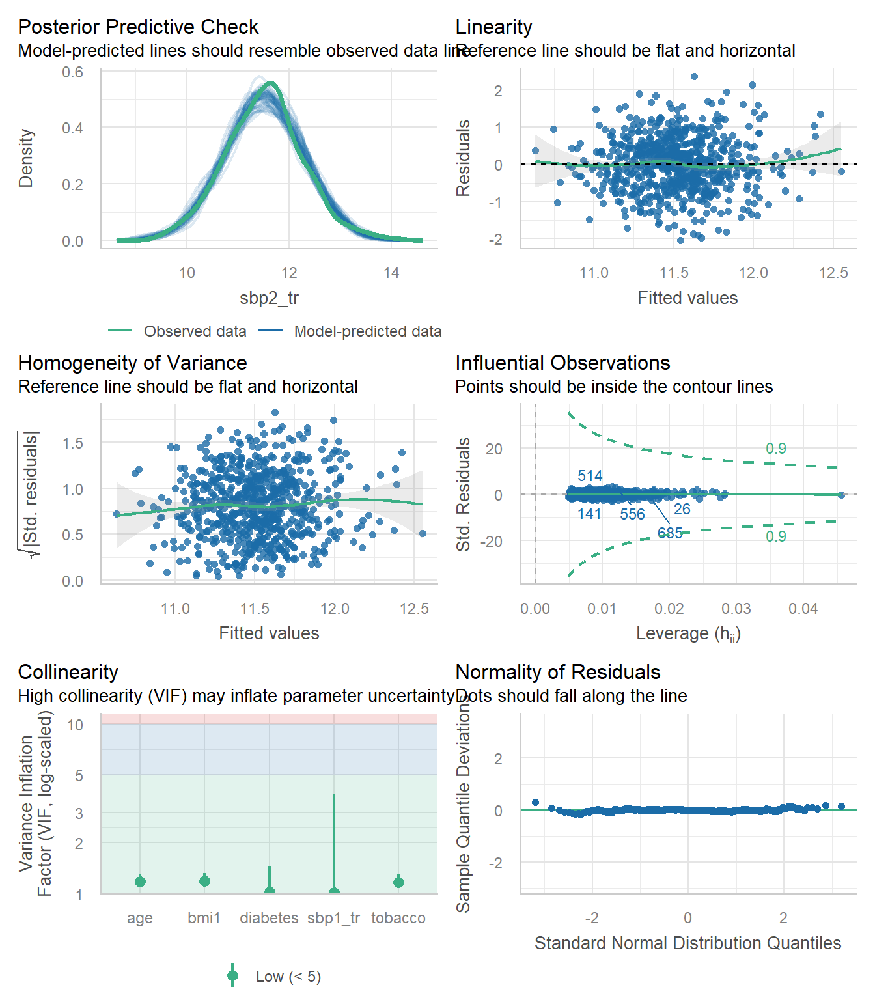
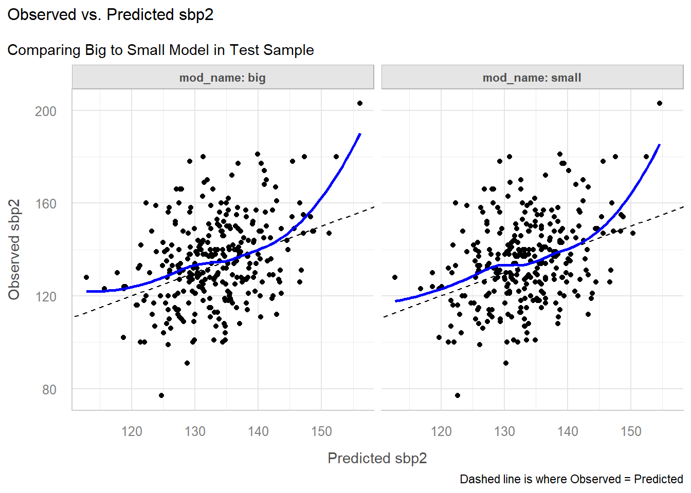

library(broom)
library(car)
library(GGally)
library(janitor)
library(knitr)
library(mosaic)
library(mice)
library(naniar)
library(patchwork)
library(xfun)
library(easystats)
library(tidyverse)
## Global options
opts_chunk$set(comment=NA)
theme_set(theme_lucid())
options(dplyr.summarise.inform = FALSE)431 Project B Sample Study 2 Report
Reminders from Dr. Love
Remember that each subsection should include at least one complete sentence explaining what you are doing, specifying the variables you are using and how you are using them, and then conclude with at least one complete sentence of discussion of the key conclusions you draw from the current step, and a discussion of any limitations you can describe that apply to the results.
If you want to download the Quarto code I used to create this document to use as a template for your own work, click on the Code button near the title of this Sample Study.
In general, DO NOT use my exact words (other than the section and subsection headings) included in this sample report in your project. Rewrite everything to make it relevant to your situation. Do not repeat my instructions back to me.
- One partial exception is that I have demonstrated the interpretation of at least one point estimate and at least one confidence interval in this Sample Report, using language that I would be happy to see you use.
1 Setup and Data Ingest
This document demonstrates analyses we are asking you to complete in Study 2 for Project B. The simulated data used in this example report are found in the hbp_study.csv data file available in the projectB section of our 431-data website.
These are simulated data from a study of high blood pressure in 999 African-American adult subjects who are not of Hispanic or Latino ethnicity. To be included, the subject had to be between 33 and 83 years of age at baseline, have a series of items available in their health record at baseline, including a baseline systolic blood pressure, and then return for a blood pressure check 18 months later. Our goal will be to build a prediction model for the subject’s systolic blood pressure at the end of the 18-month period, with the key predictor being that same subject’s systolic blood pressure at the start of the period, and adjusting (in our larger model) for several other characteristics of the subjects at baseline.
1.1 Initial Setup and Package Loads in R
1.2 Loading the Raw Data into R
Here, we load the data using read_csv and then convert all character variables to factors in R, and then change our identifying code: subj_id back to a character variable.
hbp_study <- read_csv("data/hbp_study.csv", show_col_types = FALSE) |>
mutate(across(where(is.character), as.factor)) |>
mutate(subj_id = as.character(subj_id))2 Cleaning the Data
2.1 Merging the Data
In my little demonstration here, I don’t have to do any merging. See the Study 1 Example for an example merging data.
2.2 The Raw Data
The hbp_study data set includes 12 variables and 999 adult subjects. For each subject, we have gathered
- baseline information on their
age, and theirsex, - whether or not they have a
diabetesdiagnosis, - the socio-economic status of their neighborhood of residence (
nses), - their body-mass index (
bmi1) and systolic blood pressure (sbp1), - their
insurancetype,tobaccouse history, and - whether or not they have a prescription for a
statin, or for adiuretic. - Eighteen months later, we gathered a new systolic blood pressure (
sbp2) for each subject.
glimpse(hbp_study)Rows: 999
Columns: 12
$ subj_id <chr> "A0001", "A0004", "A0005", "A0013", "A0015", "A0017", "A0018…
$ age <dbl> 58, 65, 61, 51, 61, 45, 40, 50, 43, 46, 56, 52, 58, 59, 54, …
$ sex <fct> F, F, F, M, F, F, F, F, M, F, F, F, M, F, M, F, F, F, M, M, …
$ diabetes <fct> No, No, Yes, No, No, No, Yes, Yes, No, No, No, No, No, No, Y…
$ nses <fct> Low, Very Low, Very Low, Very Low, Very Low, Low, Very Low, …
$ bmi1 <dbl> 24.41, 50.50, 29.76, 41.83, 30.95, 33.01, 36.32, 30.76, 23.1…
$ sbp1 <dbl> 147, 134, 170, 118, 132, 110, 127, 152, 125, 161, 140, 136, …
$ insurance <fct> Medicaid, Medicaid, Medicaid, Medicaid, Medicaid, Medicaid, …
$ tobacco <fct> never, never, current, quit, never, current, never, never, c…
$ statin <dbl> 0, 1, 1, 0, 0, 0, 0, 0, 0, 0, 0, 0, 1, 1, 0, 0, 1, 0, 1, 0, …
$ diuretic <dbl> 1, 1, 1, 1, 0, 1, 1, 1, 0, 1, 0, 1, 0, 1, 1, 1, 1, 1, 0, 1, …
$ sbp2 <dbl> 138, 134, 140, 143, 162, 141, 101, 154, 111, 154, 154, 138, …Note: If you have more than 20 variables in your initial (raw) data set, prune it down to 20 as the first step before showing us the results of glimpse for your data.
This tibble describes twelve variables, including:
- a character variable called
subj_idnot to be used in our model except for identification of subjects, - our outcome (
sbp2) and our key predictor (sbp1) that describe systolic blood pressure at two different times. - seven categorical candidate predictors, specifically
sex,diabetes,nses,insurance,tobacco,statin, anddiuretic, each specified here in R as either a factor or a 1/0 numeric variable (statinanddiuretic), - three quantitative candidate predictors, specifically
age,bmi1andsbp1.
2.3 Which variables should be included in the tidy data set?
In fitting my models, I actually plan only to use five predictors: sbp1, age, bmi1, diabetes and tobacco to model my outcome: sbp2. Even though I’m not planning to use all of these predictors in my models, I’m going to build a tidy data set including all of them anyway, so I can demonstrate solutions to some problems you might have.
When you build your tidy data set in the next section, restrict it to the variables (outcomes, predictors and subj_id) that you will actually use in your modeling.
In building our tidy version of these data, we must:
- deal with the ordering of levels in the multi-categorical variables
nses,insuranceandtobacco, - change the name of
nsesto something more helpful - I’ll usenbhd_sesas the new name1.
2.4 Checking our Outcome and Key Predictor
df_stats(~ sbp2 + sbp1, data = hbp_study) response min Q1 median Q3 max mean sd n missing
1 sbp2 77 121 133 144 203 133.7427 17.93623 999 0
2 sbp1 81 124 136 147 205 136.5185 18.34717 999 0We have no missing values in our outcome or our key predictor, and each of the values look plausible, so we’ll move on.
2.5 Checking the Quantitative Predictors
Besides sbp1 we have two other quantitative predictor candidates, age and bmi1.
df_stats(~ age + bmi1, data = hbp_study) response min Q1 median Q3 max mean sd n missing
1 age 33.00 52.000 59.000 66.000 83.00 58.68669 10.47551 999 0
2 bmi1 16.72 27.865 32.145 38.365 74.65 33.72258 8.36090 994 5We know that all subjects in these data had to be between 33 and 83 years of age in order to be included, so we’re happy to see that they are. We have five missing values (appropriately specified with NA) and no implausible values in our BMI values (I would use 16-80 as a plausible range of BMI values for adults.) Things look OK for now, as we’ll deal with the missing values last.
2.6 Checking the Categorical Variables
For categorical variables, it’s always worth it to check to see whether the existing orders of the factor levels match the inherent order of the information, as well as whether there are any levels which we might want to collapse due to insufficient data, and whether there are any missing values.
2.6.1 nses: home neighborhood’s socio-economic status
hbp_study |> tabyl(nses) nses n percent valid_percent
High 154 0.154154154 0.1553986
Low 336 0.336336336 0.3390515
Middle 281 0.281281281 0.2835520
Very Low 220 0.220220220 0.2219980
<NA> 8 0.008008008 NA- The order of
nses, instead of the alphabetical (“High”, “Low”, “Middle”, “Very Low”), should go from “Very Low” to “Low” to “Middle” to “High”, or perhaps its reverse. - Let’s fix that using the
fct_relevelfunction from theforcatspackage, which is part of thetidyverse. While we’re at it, we’ll rename the variablenbhd_seswhich is more helpful to me. - Then we’ll see how many subjects fall in each category.
hbp_study <- hbp_study |>
rename(nbhd_ses = nses) |>
mutate(nbhd_ses = fct_relevel(nbhd_ses, "Very Low", "Low",
"Middle", "High"))
hbp_study |> tabyl(nbhd_ses) nbhd_ses n percent valid_percent
Very Low 220 0.220220220 0.2219980
Low 336 0.336336336 0.3390515
Middle 281 0.281281281 0.2835520
High 154 0.154154154 0.1553986
<NA> 8 0.008008008 NAWe have 8 missing values of nbhd_ses. We’ll deal with that later.
2.6.2 tobacco: tobacco use history
hbp_study |> tabyl(tobacco) tobacco n percent valid_percent
current 295 0.29529530 0.3022541
never 319 0.31931932 0.3268443
quit 362 0.36236236 0.3709016
<NA> 23 0.02302302 NA- For
tobacco, instead of (“current”, “never”, “quit”), we want a new order: (“never”, “quit”, “current”).
hbp_study <- hbp_study |>
mutate(tobacco = fct_relevel(tobacco, "never", "quit",
"current"))
hbp_study |> count(tobacco)# A tibble: 4 × 2
tobacco n
<fct> <int>
1 never 319
2 quit 362
3 current 295
4 <NA> 23We have 23 missing values of tobacco. Again, we’ll deal with that later.
2.6.3 insurance: primary insurance type
hbp_study |> tabyl(insurance) insurance n percent
Medicaid 398 0.39839840
Medicare 402 0.40240240
Private 160 0.16016016
Uninsured 39 0.03903904- For
insurance, we’ll change the order to (“Medicare”, “Private”, “Medicaid”, “Uninsured”)
hbp_study <- hbp_study |>
mutate(insurance = fct_relevel(insurance, "Medicare",
"Private", "Medicaid",
"Uninsured"))
hbp_study |> tabyl(insurance) insurance n percent
Medicare 402 0.40240240
Private 160 0.16016016
Medicaid 398 0.39839840
Uninsured 39 0.03903904Note that any levels left out of a fct_relevel statement get included in their current order, after whatever levels have been specified.
2.6.4 What about the subjects?
It is important to make sure that we have a unique (distinct) code (here, subj_id) for each row in the raw data set.
nrow(hbp_study)[1] 999n_distinct(hbp_study |> select(subj_id))[1] 999OK, that’s fine.
2.7 Dealing with Missingness
In Study 2, we will take the following steps once we have ensured that any missing values are appropriately specified using NA.
- If there are any missing values in your outcome, drop those subjects.
- If there are any missing values in your key predictor, drop those subjects.
- Build your codebook using the original data you have (including missing values.)
- Once you have built the codebook, perform single imputation with the mice package to obtain your analytic sample, which you will then partition into a training and testing sample, and then use for the remainder of the work (everything after the codebook.)
2.8 Steps 1 and 2: Missing values in our outcome or key predictor?
miss_var_summary(hbp_study)# A tibble: 12 × 3
variable n_miss pct_miss
<chr> <int> <num>
1 tobacco 23 2.30
2 nbhd_ses 8 0.801
3 bmi1 5 0.501
4 subj_id 0 0
5 age 0 0
6 sex 0 0
7 diabetes 0 0
8 sbp1 0 0
9 insurance 0 0
10 statin 0 0
11 diuretic 0 0
12 sbp2 0 0 miss_case_table(hbp_study)# A tibble: 2 × 3
n_miss_in_case n_cases pct_cases
<int> <int> <dbl>
1 0 963 96.4
2 1 36 3.60We are missing data for 36 of our 999 subjects, but we don’t have any missing values in either our outcome sbp2 or our key predictor sbp1, so we’ll move on to build our codebook.
3 Codebook and Data Description
3.1 The Codebook
Note
Below, I’ve demonstrated the task of building a set of variable descriptions for a larger set of predictors than I actually intend to use, just to illustrate.
The 12 variables in the hbp_study tibble are as follows.
| Variable | Type | Description / Levels |
|---|---|---|
subj_id |
Character | subject code (A001-A999) |
sbp2 |
Quantitative | outcome variable, SBP after 18 months, in mm Hg |
sbp1 |
Quantitative | key predictor baseline SBP (systolic blood pressure), in mm Hg |
age |
Quantitative | age of subject at baseline, in years |
sex |
Binary | Male or Female |
diabetes |
Binary | Does subject have a diabetes diagnosis: No or Yes |
nbhd_ses |
4 level Cat. | Socio-economic status of subject’s home neighborhood: Very Low, Low, Middle and High |
bmi1 |
Quantitative | subject’s body-mass index at baseline |
insurance |
4 level Cat. | subject’s insurance status at baseline: Medicare, Private, Medicaid, Uninsured |
tobacco |
3 level Cat. | subject’s tobacco use at baseline: never, quit (former), current |
statin |
Binary | 1 = statin prescription at baseline, else 0 |
diuretic |
Binary | 1 = diuretic prescription at baseline, else 0 |
In fitting my models, I actually plan only to use five predictors: sbp1, age, bmi1, diabetes and tobacco to model my outcome: sbp2. So let’s create that data set as a tibble, and provide its set of variable descriptions.
hbp_a1 <- hbp_study |>
select(subj_id, sbp2, sbp1, age, bmi1, diabetes, tobacco) The 7 variables in the hbp_a1 tibble are as follows.
| Variable | Type | Description / Levels |
|---|---|---|
subj_id |
Character | subject code (A001-A999) |
sbp2 |
Quantitative | outcome variable, SBP after 18 months, in mm Hg |
sbp1 |
Quantitative | key predictor baseline SBP (systolic blood pressure), in mm Hg |
age |
Quantitative | age of subject at baseline, in years |
bmi1 |
Quantitative | subject’s body-mass index at baseline |
diabetes |
Binary | Does subject have a diabetes diagnosis: No or Yes |
tobacco |
3 level Cat. | subject’s tobacco use at baseline: never, quit (former), current |
3.2 Print the Tibble
First, we’ll provide a printout of the tibble, which confirms that we have one.
hbp_a1# A tibble: 999 × 7
subj_id sbp2 sbp1 age bmi1 diabetes tobacco
<chr> <dbl> <dbl> <dbl> <dbl> <fct> <fct>
1 A0001 138 147 58 24.4 No never
2 A0004 134 134 65 50.5 No never
3 A0005 140 170 61 29.8 Yes current
4 A0013 143 118 51 41.8 No quit
5 A0015 162 132 61 31.0 No never
6 A0017 141 110 45 33.0 No current
7 A0018 101 127 40 36.3 Yes never
8 A0019 154 152 50 30.8 Yes never
9 A0020 111 125 43 23.1 No current
10 A0025 154 161 46 NA No never
# ℹ 989 more rowsOK. All set. Now we show the data_codebook() results.
3.3 data_codebook() results
data_codebook(hbp_a1 |> select(-subj_id))select(hbp_a1, -subj_id) (999 rows and 6 variables, 6 shown)
ID | Name | Type | Missings | Values | N
---+----------+-------------+-----------+----------------+------------
1 | sbp2 | numeric | 0 (0.0%) | [77, 203] | 999
---+----------+-------------+-----------+----------------+------------
2 | sbp1 | numeric | 0 (0.0%) | [81, 205] | 999
---+----------+-------------+-----------+----------------+------------
3 | age | numeric | 0 (0.0%) | [33, 83] | 999
---+----------+-------------+-----------+----------------+------------
4 | bmi1 | numeric | 5 (0.5%) | [16.72, 74.65] | 994
---+----------+-------------+-----------+----------------+------------
5 | diabetes | categorical | 0 (0.0%) | No | 668 (66.9%)
| | | | Yes | 331 (33.1%)
---+----------+-------------+-----------+----------------+------------
6 | tobacco | categorical | 23 (2.3%) | never | 319 (32.7%)
| | | | quit | 362 (37.1%)
| | | | current | 295 (30.2%)
----------------------------------------------------------------------We should (and do) see no implausible values here, and our categorical variables are treated as factors with a rational ordering for the levels.
3.4 Our Single Imputation
We will now assuming MISSING AT RANDOM and singly impute the missing values in hbp_a1, creating a new analytic tibble called hbp_a2, which we will use for the rest of our work.
set.seed(4311)
hbp_imp <- mice(hbp_a1, m = 1, printFlag = FALSE)Warning: Number of logged events: 1hbp_a2 <- complete(hbp_imp)
n_miss(hbp_a2)[1] 03.5 Partition the Data
First, we should check that our subject identifying codes are unique to each row of our analytic data.
c(nrow(hbp_a2), n_distinct(hbp_a2$subj_id))[1] 999 999OK. Since those two values match, we should be ready to partition. We’ll put 70% of the data in the training sample (hbp_train) leaving the other 30% for the test sample (hbp_test).
set.seed(4312)
hbp_train <- hbp_a2 |> slice_sample(prop = 0.7, replace = FALSE)
hbp_test <- anti_join(hbp_a2, hbp_train, by = "subj_id")4 My Research Question
Here you should provide background information on the study, and the subjects, so that we understand what you’re talking about in your research question. I’ll skip that in the demo, because I’ve done it already in introducing the data set, but you’ll need that here.
A natural research question here would be something like:
How effectively can we predict systolic BP 18 months after baseline using baseline systolic BP, and is the quality of prediction meaningfully improved when I adjust for four other predictors (baseline age, body-mass index, diabetes diagnosis and tobacco use) in the
hbp_studydata?
Please don’t feel obliged to follow this format precisely in stating your question, and note that your “smaller” model needs to include your key predictor and at least one other predictor, something I didn’t require of myself in posing this question.
5 Transforming the Outcome
5.1 Visualizing the Outcome Distribution
I see at least three potential graphs to use to describe the distribution of our outcome variable, sbp2. Again, remember we’re using only the training sample here.
- A boxplot, probably accompanied by a violin plot to show the shape of the distribution more honestly.
- A histogram, which could perhaps be presented as a density plot with a Normal distribution superimposed.
- A Normal Q-Q plot to directly assess Normality.
I expect you to show at least two of these three, but I will display all three here. Should we see substantial skew in the outcome data, we will want to consider an appropriate transformation, and then display the results of that transformation, as well.
WARNING: Please note that I am deliberately showing you plots that are less finished than I hope you will provide.
- The coloring is dull or non-existent.
- The theme is the default gray and white grid that lots of people dislike.
- There are no meaningful titles or subtitles.
- The axis labels select the default settings, and use incomprehensible variable names.
- The coordinates aren’t flipped when that might be appropriate.
- I expect a much nicer presentation in your final work. Use the class slides and course text for good ideas.
viz1 <- ggplot(hbp_train, aes(x = "", y = sbp2)) +
geom_violin() +
geom_boxplot(width = 0.25)
viz2 <- ggplot(hbp_train, aes(x = sbp2)) +
geom_histogram(bins = 30, col = "white")
viz3 <- ggplot(hbp_train, aes(sample = sbp2)) +
geom_qq() + geom_qq_line()
viz1 + viz2 + viz3 +
plot_annotation(title = "Less-Than-Great Plots of My Outcome's Distribution",
subtitle = "complete with a rotten title, default axis labels and bad captions")
Later, we’ll augment this initial look at the outcome data with a Box-Cox plot to suggest a potential transformation. Should you decide to make such a transformation, remember to return here to plot the results for your new and transformed outcome.
5.2 Numerical Summary of the Outcome
Assuming you plan no transformation of the outcome (and in our case, I am happy that the outcome data appear reasonably well-modeled by the Normal distribution) then you should just summarize the training data, with your favorite tool for that task. That might be:
lovedist()from ourLove-431.Rscript, orfavstatsfrom themosaicpackage, as shown below, or- something else, I guess.
But show ONE of these choices, and not all of them. Make a decision and go with it!
favstats(~ sbp2, data = hbp_train) min Q1 median Q3 max mean sd n missing
90 121 133 143 200 133.1645 17.6876 699 05.3 Numerical Summaries of the Predictors
We also need an appropriate set of numerical summaries of each predictor variable, in the training data. The inspect function provides a way to get results like favstats, but for an entire data frame.
hbp_train |> select(-subj_id, -sbp2) |>
inspect()
categorical variables:
name class levels n missing
1 diabetes factor 2 699 0
2 tobacco factor 3 699 0
distribution
1 No (66.1%), Yes (33.9%)
2 quit (37.5%), never (33.5%) ...
quantitative variables:
name class min Q1 median Q3 max mean sd n
1 sbp1 numeric 83.00 124.000 135.00 146.000 203.00 135.89843 17.777992 699
2 age numeric 33.00 52.000 59.00 66.000 83.00 58.78541 10.442077 699
3 bmi1 numeric 16.72 27.715 32.26 38.255 74.65 33.69518 8.448366 699
missing
1 0
2 0
3 0Next, we will build and interpret a scatterplot matrix to describe the associations (both numerically and graphically) between the outcome and all predictors.
- We’ll also use a Box-Cox plot to investigate whether a transformation of our outcome is suggested, and
- describe what a correlation matrix suggests about collinearity between candidate predictors.
5.4 Scatterplot Matrix
Here, we will build a scatterplot matrix (or two) to show the relationship between our outcome and the predictors. I’ll demonstrate the use of ggpairs from the GGally package.
- If you have more than five predictors (as we do in our case) you should build two scatterplot matrices, each ending with the outcome. Anything more than one outcome and five predictors becomes unreadable in Professor Love’s view.
- If you have a multi-categorical predictor with more than four categories, that predictor will be very difficult to see and explore in the scatterplot matrix produced.
temp <- hbp_train |>
select(sbp1, age, bmi1, diabetes, tobacco, sbp2)
ggpairs(temp, title = "Scatterplot Matrix",
lower = list(combo = wrap("facethist", bins = 20)))
At the end of this section, you should provide some discussion of the distribution of any key predictors, and their relationship to the outcome (all of that is provided in the bottom row if you place the outcome last, as you should, in selecting variables for the plot.)
HINT: For categorical variables, your efforts in this regard to summarize the relationships you see may be challenging. Your comments would be aided by the judicious use of numerical summaries. For example, suppose you want to study the relationship between tobacco use and sbp2, then you probably want to run and discuss the following results, in addition to the scatterplot matrix above.
favstats(sbp2 ~ tobacco, data = hbp_train) tobacco min Q1 median Q3 max mean sd n missing
1 never 95 126.00 135 144.0 186 135.5385 16.49661 234 0
2 quit 95 119.25 130 141.0 182 131.0992 16.55542 262 0
3 current 90 119.00 134 145.5 200 133.0936 20.02340 203 05.5 Collinearity Checking
Next, we’ll take a brief look at potential collinearity. Remember that we want to see strong correlations between our outcome and the predictors, but relatively modest correlations between the predictors.
None of the numeric candidate predictors show any substantial correlation with each other. The largest Pearson correlation (in absolute value) between predictors is (-0.239) for age and bmi1, and that’s not strong. If we did see signs of meaningful collinearity, we might rethink our selected set of predictors.
I’ll recommend later that you run a generalized VIF (variance inflation factor) calculation2 after fitting your kitchen sink model just to see if anything pops up (in my case, it won’t.)
5.6 boxCox function to assess need for transformation of our outcome
To use the boxCox approach here, we need to ensure that the distribution of our outcome, sbp2, includes strictly positive values. We can see from our numerical summary earlier that the minimum sbp2 in our hbp_train sample is 90, so we’re OK.
- Note that I am restricting myself here to the five predictors I actually intend to use in building models.
- Although we’re generally using a 90% confidence interval in this project, we won’t worry about that issue in the
boxCoxplot, and instead just look at the point estimate frompowerTransform. - These commands (
boxCoxandpowerTransform) come from thecarpackage.
model_temp <- lm(sbp2 ~ sbp1 + age + bmi1 + diabetes + tobacco,
data = hbp_train)
boxCox(model_temp)
The estimated power transformation is about 0.5, which looks like a square root transformation of sbp2 is useful. Given that I’m using another measure of sbp, specifically, sbp1 to predict sbp2, perhaps I want to transform that, too?
p1 <- ggplot(hbp_train, aes(x = sbp1, y = sqrt(sbp2))) +
geom_point() +
geom_smooth(method = "loess", formula = y ~ x, se = FALSE) +
geom_smooth(method = "lm", col = "red", formula = y ~ x, se = FALSE) +
labs(title = "SQRT(sbp2) vs. SBP1")
p2 <- ggplot(hbp_train, aes(x = sqrt(sbp1), y = sqrt(sbp2))) +
geom_point() +
geom_smooth(method = "loess", formula = y ~ x, se = FALSE) +
geom_smooth(method = "lm", col = "red", formula = y ~ x, se = FALSE) +
labs(title = "SQRT(sbp2) vs. SQRT(sbp1)")
p1 + p2
I don’t see an especially large difference between these two plots. It is up to you to decide whether a transformation suggested by boxCox should be applied to your data.
- For the purposes of this project, you should stick to transformations of strictly positive outcomes, and to the square root (power = 0.5), square (power = 2), logarithm (power = 0) and inverse (power = -1) transformations. Don’t make the transformation without being able to interpret the result well.
- Feel encouraged to scale your transformations (by multiplying or dividing by a constant) so that most of the transformed values wind up between 0 and 100 or 0 and 1000, if you like.
- If you do decide to include a transformation of your outcome in fitting models, be sure to back-transform any predictions you make at the end of the study so that we can understand the prediction error results.
- If your outcome data are substantially multimodal, I wouldn’t treat the
boxCoxresults as meaningful.
I’m going to use the square root transformation for both my outcome and for the key predictor, but I don’t think it makes a big difference. I’m doing it mostly so that I can show you how to back-transform later.
6 The Big Model
We will specify a “kitchen sink” linear regression model to describe the relationship between our outcome (potentially after transformation) and the main effects of each of our predictors. We’ll need to:
- We’ll assess the overall effectiveness, within your training sample, of your model, by considering performance in the training sample using a wide range of summaries.
- We’ll need to specify the size, magnitude and meaning of all coefficients, and identify appropriate conclusions regarding effect sizes with 90% confidence intervals.
- Finally, we’ll assess whether collinearity in the kitchen sink model has a meaningful impact, and describe how we know that.
6.1 Fitting/Summarizing the Kitchen Sink model
Our “kitchen sink” or “big” model predicts the square root of sbp2 using the predictors (square root of sbp1), age, bmi1, diabetes and tobacco.
First, we’ll use mutate to create our two new transformed variables.
hbp_train <- hbp_train |>
mutate(sbp2_tr = sqrt(sbp2), sbp1_tr = sqrt(sbp1))Next, we’ll fit our “big” (kitchen sink) model.
model_big <- lm(sbp2_tr ~ sbp1_tr + age + bmi1 + diabetes + tobacco,
data = hbp_train)model_performance(model_big)# Indices of model performance
AIC | AICc | BIC | R2 | R2 (adj.) | RMSE | Sigma
------------------------------------------------------------
1525.4 | 1525.6 | 1561.8 | 0.128 | 0.121 | 0.712 | 0.7166.2 Effect Sizes: Coefficient Estimates
Specify the size and magnitude of all coefficients, providing estimated effect sizes with 90% confidence intervals.
model_parameters(model_big, ci = 0.90)Parameter | Coefficient | SE | 90% CI | t(692) | p
-----------------------------------------------------------------------------
(Intercept) | 7.31 | 0.47 | [ 6.53, 8.08] | 15.51 | < .001
sbp1 tr | 0.34 | 0.04 | [ 0.28, 0.40] | 9.39 | < .001
age | 3.58e-03 | 2.82e-03 | [ 0.00, 0.01] | 1.27 | 0.205
bmi1 | 4.18e-03 | 3.49e-03 | [ 0.00, 0.01] | 1.20 | 0.231
diabetes [Yes] | -9.27e-03 | 0.06 | [-0.10, 0.09] | -0.16 | 0.873
tobacco [quit] | -0.15 | 0.07 | [-0.25, -0.04] | -2.23 | 0.026
tobacco [current] | -0.05 | 0.07 | [-0.16, 0.07] | -0.63 | 0.530
Uncertainty intervals (equal-tailed) and p-values (two-tailed) computed
using a Wald t-distribution approximation.6.3 Describing the Equation
This model implies for the key predictor (sbp_1) that:
- Point Estimate: If we had two subjects with the same values of age, BMI, diabetes and tobacco status, but A had a baseline square root of SBP of, for example, 12 (so an SBP at baseline of 144) and B had a baseline square root of SBP one unit lower, so for example, 11 (so an SBP at baseline of 121) our
model_bigpredicts that the square root of subject A’s SBP at 18 months will be 0.34 points higher (90% CI: 0.28, 0.40) than that of subject B. - 90% Confidence Interval: Our
model_bigestimates the slope of the square root ofsbp_1to be 0.34 in the participants in our study. When we generalize beyond study participants to the population they were selected at random from, then our data are compatible (at the 90% confidence level) with population slopes between 0.28 and 0.40 for our transformedsbp_1.
You should also provide a description of the meaning (especially the direction) of the point estimates of the other coefficients in your model being sure to interpret the coefficients as having meaning holding all other predictors constant, but I’ll skip that here.
7 The Smaller Model
Here, we will build a second linear regression model using a subset of our “kitchen sink” model predictors, chosen to maximize predictive value within our training sample.
- We’ll specify the method you used to obtain this new model. (Backwards stepwise elimination is appealing but not great. It’s perfectly fine to just include the key predictor and one other predictor you like, or to use best subsets to generate a subset for this new model, so long as your subset includes your key predictor.)
7.1 Backwards Stepwise Elimination
step(model_big)Start: AIC=-460.28
sbp2_tr ~ sbp1_tr + age + bmi1 + diabetes + tobacco
Df Sum of Sq RSS AIC
- diabetes 1 0.013 354.66 -462.26
- bmi1 1 0.736 355.39 -460.83
- age 1 0.826 355.48 -460.65
<none> 354.65 -460.28
- tobacco 2 2.658 357.31 -459.06
- sbp1_tr 1 45.165 399.82 -378.49
Step: AIC=-462.26
sbp2_tr ~ sbp1_tr + age + bmi1 + tobacco
Df Sum of Sq RSS AIC
- bmi1 1 0.722 355.39 -462.83
- age 1 0.820 355.49 -462.64
<none> 354.66 -462.26
- tobacco 2 2.677 357.34 -461.00
- sbp1_tr 1 45.152 399.82 -380.49
Step: AIC=-462.83
sbp2_tr ~ sbp1_tr + age + tobacco
Df Sum of Sq RSS AIC
- age 1 0.457 355.84 -463.93
<none> 355.39 -462.83
- tobacco 2 2.732 358.12 -461.48
- sbp1_tr 1 46.258 401.65 -379.30
Step: AIC=-463.93
sbp2_tr ~ sbp1_tr + tobacco
Df Sum of Sq RSS AIC
<none> 355.84 -463.93
- tobacco 2 2.452 358.30 -463.13
- sbp1_tr 1 46.423 402.27 -380.22
Call:
lm(formula = sbp2_tr ~ sbp1_tr + tobacco, data = hbp_train)
Coefficients:
(Intercept) sbp1_tr tobaccoquit tobaccocurrent
7.62034 0.34114 -0.14135 -0.07367 The backwards selection stepwise approach suggests a model with sqrt(sbp1) and tobacco, but not age, bmi1 or diabetes.
7.2 Fitting the “small” model
model_small <- lm(sqrt(sbp2) ~ sqrt(sbp1) + tobacco, data = hbp_train)
model_performance(model_small)# Indices of model performance
AIC | AICc | BIC | R2 | R2 (adj.) | RMSE | Sigma
------------------------------------------------------------
5903.8 | 5903.9 | 5926.6 | 0.126 | 0.122 | 0.713 | 0.7167.3 Effect Sizes: Coefficient Estimates
model_parameters(model_small, ci = 0.90)Parameter | Coefficient | SE | 90% CI | t(695) | p
-------------------------------------------------------------------------
(Intercept) | 7.62 | 0.42 | [ 6.92, 8.32] | 18.03 | < .001
sbp1 [sqrt] | 0.34 | 0.04 | [ 0.28, 0.40] | 9.52 | < .001
tobacco [quit] | -0.14 | 0.06 | [-0.25, -0.03] | -2.19 | 0.029
tobacco [current] | -0.07 | 0.07 | [-0.19, 0.04] | -1.07 | 0.285
Uncertainty intervals (equal-tailed) and p-values (two-tailed) computed
using a Wald t-distribution approximation.7.4 Interpreting the Small Model Regression Equation
Here, we again need to specify the size and magnitude of all coefficients, providing estimated effect sizes with 90% confidence intervals.
I’ll skip the necessary English sentences here in the demo that explain the meaning of the estimates in our model. You should provide a detailed explanation of the point estimates for all slopes, and of the confidence interval for the slope of your key predictor.
8 In-Sample Comparison
8.1 Compare Performance
plot(compare_performance(model_big, model_small))When comparing models, please note that probably not all models were fit
from same data.
compare_performance(model_big, model_small, rank = TRUE)When comparing models, please note that probably not all models were fit
from same data.# Comparison of Model Performance Indices
Name | Model | R2 | R2 (adj.) | RMSE | Sigma | AIC weights
---------------------------------------------------------------------
model_big | lm | 0.128 | 0.121 | 0.712 | 0.716 | 1.00
model_small | lm | 0.126 | 0.122 | 0.713 | 0.716 | 0.00e+00
Name | AICc weights | BIC weights | Performance-Score
------------------------------------------------------------
model_big | 1.00 | 1.00 | 71.43%
model_small | 0.00e+00 | 0.00e+00 | 28.57%These results can be summarized as follows:
model_big(naturally) has a stronger \(R^2\) result, but it also has a better result for RMSE, AIC and BIC.model_smallhas a stronger result for Adjusted \(R^2\) and Sigma.
8.2 Assessing Assumptions
Here, we should run a set of residual plots for each model, with check_model() and interpret your findings in each case, carefully. I’ll show my plots for model_big here.
8.2.1 Checking model_big
check_model(model_big)
I see no serious problems with the assumptions of linearity, Normality and constant variance, nor do I see any highly influential points in our big model.
8.2.2 Does collinearity have a meaningful impact?
If we fit models with multiple predictors, then we might want to augment the plot above by assessing variance inflation factors to see the potential impact of collinearity.
vif(model_big) GVIF Df GVIF^(1/(2*Df))
sbp1_tr 1.014160 1 1.007055
age 1.181857 1 1.087132
bmi1 1.185957 1 1.089017
diabetes 1.027252 1 1.013534
tobacco 1.165447 2 1.039018We’d need to see a generalized variance inflation factor above 5 for collinearity to be a meaningful concern, so we should be fine in our big model. Our small model also has multiple predictors, but collinearity cannot be an issue, since it’s just a subset of our big model, which didn’t have a collinearity problem.
8.3 Comparing the Models
Based on the training sample, you should draw a conclusion. So far, I will support the larger model. It has (slightly) better performance on the fit quality measures, and each model shows no serious problems with regression assumptions.
9 Model Validation
Now, we will use our two regression models to predict the value of our outcome using the predictor values in the test sample.
- We may need to back-transform the predictions to the original units if we wind up fitting a model to a transformed outcome.
- We’ll definitely need to compare the two models in terms of our four main summaries, in a Table, which I will definitely want to see in your portfolio.
- We’ll have to specify which model appears better at out-of-sample prediction according to these comparisons, and how we know that.
9.1 Calculating Prediction Errors
9.1.1 Big Model: Back-Transformation and Calculating Fits/Residuals
First, we need to create our transformed data in our test data.
hbp_test <- hbp_test |> mutate(sbp1_tr = sqrt(sbp1), sbp2_tr = sqrt(sbp2))We’ll use the augment function from the broom package to help us here, and create sbp2_fit to hold the fitted values on the original sbp2 scale after back-transformation (by squaring the predictions on the square root scale) and then sbp2_res to hold the residuals (prediction errors) we observe using the big model on the hbp_test data.
aug_big <- augment(model_big, newdata = hbp_test) |>
mutate(mod_name = "big",
sbp2_fit = .fitted^2,
sbp2_res = sbp2 - sbp2_fit) |>
select(subj_id, mod_name, sbp2, sbp2_fit, sbp2_res, everything())
head(aug_big,3)# A tibble: 3 × 14
subj_id mod_name sbp2 sbp2_fit sbp2_res sbp1 age bmi1 diabetes tobacco
<chr> <chr> <dbl> <dbl> <dbl> <dbl> <dbl> <dbl> <fct> <fct>
1 A0001 big 138 137. 0.886 147 58 24.4 No never
2 A0018 big 101 130. -28.9 127 40 36.3 Yes never
3 A0032 big 147 129. 18.1 130 58 32.8 No quit
# ℹ 4 more variables: sbp1_tr <dbl>, sbp2_tr <dbl>, .fitted <dbl>, .resid <dbl>9.1.2 Small Model: Back-Transformation and Calculating Fits/Residuals
We’ll do the same thing, but using the small model in the hbp_test data.
aug_small <- augment(model_small, newdata = hbp_test) |>
mutate(mod_name = "small",
sbp2_fit = .fitted^2,
sbp2_res = sbp2 - sbp2_fit) |>
select(subj_id, mod_name, sbp2, sbp2_fit, sbp2_res, everything())
head(aug_small,3)# A tibble: 3 × 14
subj_id mod_name sbp2 sbp2_fit sbp2_res sbp1 age bmi1 diabetes tobacco
<chr> <chr> <dbl> <dbl> <dbl> <dbl> <dbl> <dbl> <fct> <fct>
1 A0001 small 138 138. -0.215 147 58 24.4 No never
2 A0018 small 101 131. -30.4 127 40 36.3 Yes never
3 A0032 small 147 129. 17.8 130 58 32.8 No quit
# ℹ 4 more variables: sbp1_tr <dbl>, sbp2_tr <dbl>, .fitted <dbl>, .resid <dbl>9.1.3 Combining the Results
test_comp <- union(aug_big, aug_small) |>
arrange(subj_id, mod_name)
test_comp |> head()# A tibble: 6 × 14
subj_id mod_name sbp2 sbp2_fit sbp2_res sbp1 age bmi1 diabetes tobacco
<chr> <chr> <dbl> <dbl> <dbl> <dbl> <dbl> <dbl> <fct> <fct>
1 A0001 big 138 137. 0.886 147 58 24.4 No never
2 A0001 small 138 138. -0.215 147 58 24.4 No never
3 A0002 big 138 133. 5.43 130 64 30.8 No never
4 A0002 small 138 132. 5.52 130 64 30.8 No never
5 A0003 big 131 128. 2.87 130 52 29.4 No quit
6 A0003 small 131 129. 1.75 130 52 29.4 No quit
# ℹ 4 more variables: sbp1_tr <dbl>, sbp2_tr <dbl>, .fitted <dbl>, .resid <dbl>Given this test_comp tibble, including predictions and residuals from the kitchen sink model on our test data, we can now:
- Visualize the prediction errors from each model.
- Summarize those errors across each model.
- Identify the “worst fitting” subject for each model in the test sample.
The next few subsections actually do these things.
9.2 Visualizing the Predictions
ggplot(test_comp, aes(x = sbp2_fit, y = sbp2)) +
geom_point() +
geom_abline(slope = 1, intercept = 0, lty = "dashed") +
geom_smooth(method = "loess", col = "blue", se = FALSE, formula = y ~ x) +
facet_wrap( ~ mod_name, labeller = "label_both") +
labs(x = "Predicted sbp2",
y = "Observed sbp2",
title = "Observed vs. Predicted sbp2",
subtitle = "Comparing Big to Small Model in Test Sample",
caption = "Dashed line is where Observed = Predicted")
I’m not seeing a lot of difference between the models in terms of the adherence of the points to the dashed line. The models seem to be making fairly similar errors.
9.3 Summarizing the Errors
Calculate the mean absolute prediction error (MAPE), the root mean squared prediction error (RMSPE) and the maximum absolute error across the predictions made by each model.
test_comp |>
group_by(mod_name) |>
summarise(n = n(),
MAPE = mean(abs(sbp2_res)),
RMSPE = sqrt(mean(sbp2_res^2)),
max_error = max(abs(sbp2_res)),
R2_val = cor(sbp2, sbp2_fit)^2)# A tibble: 2 × 6
mod_name n MAPE RMSPE max_error R2_val
<chr> <int> <dbl> <dbl> <dbl> <dbl>
1 big 300 13.7 17.3 48.8 0.127
2 small 300 13.7 17.3 49.2 0.126This is a table Dr. Love will definitely need to see during your presentation.
In this case, all four of these summaries are better for the bigger model.
These models suggest an average error in predicting systolic blood pressure (using MAPE) of more than 13 mm Hg. That’s not great on the scale of systolic blood pressure, I think. In addition, our validated \(R^2\) values here are only slightly worse (in either model) than what we saw in our training sample.
9.3.1 Identify the largest errors
Identify the subject(s) where that maximum prediction error was made by each model, and the observed and model-fitted values of sbp2 for that subject in each case.
temp1 <- aug_big |>
filter(abs(sbp2_res) == max(abs(sbp2_res)))
temp2 <- aug_small |>
filter(abs(sbp2_res) == max(abs(sbp2_res)))
bind_rows(temp1, temp2)# A tibble: 2 × 14
subj_id mod_name sbp2 sbp2_fit sbp2_res sbp1 age bmi1 diabetes tobacco
<chr> <chr> <dbl> <dbl> <dbl> <dbl> <dbl> <dbl> <fct> <fct>
1 A0703 big 178 129. 48.8 130 64 30.0 No quit
2 A0265 small 180 131. 49.2 130 65 27.3 No current
# ℹ 4 more variables: sbp1_tr <dbl>, sbp2_tr <dbl>, .fitted <dbl>, .resid <dbl>- In our case, a different subject (
A0703in the big model, andA0265in the small model) was most poorly fit by each model.
9.4 Comparing the Models
I would select model_big here, on the basis of the similar performance in terms of the visualization of errors, and small improvements in all four of our main test sample summaries.
10 Discussion
10.1 Chosen Model
I chose the bigger model. You’ll want to briefly reiterate the reasons why in this subsection, using results related to training-sample summaries, training-sample assumptions and model checks, and test-sample performance assessments. If you have evidence towards both models, decide what’s more important to you, and pick a winner.
10.2 Answering My Question
Now use the winning model to answer the research question, in a complete sentence of two.
10.3 Next Steps
Describe an interesting next step, which might involve fitting a new model not available with your current cleaned data, or dealing with missing values differently, or obtaining new or better data, or something else. You should be able to describe why this might help.
10.4 Reflection
Tell us what you know now that would have changed your approach to Study 2 had you known it at the start.
11 Session Information
should be included at the end of your report, from the xfun package, please.
session_info()R version 4.5.1 (2025-06-13 ucrt)
Platform: x86_64-w64-mingw32/x64
Running under: Windows 11 x64 (build 26200)
Locale:
LC_COLLATE=English_United States.utf8
LC_CTYPE=English_United States.utf8
LC_MONETARY=English_United States.utf8
LC_NUMERIC=C
LC_TIME=English_United States.utf8
Package version:
abind_1.4-8 askpass_1.2.1 backports_1.5.0
base64enc_0.1.3 bayestestR_0.17.0 bit_4.6.0
bit64_4.6.0-1 blob_1.2.4 boot_1.3-32
broom_1.0.10 bslib_0.9.0 cachem_1.1.0
callr_3.7.6 car_3.1-3 carData_3.0-5
cellranger_1.1.0 cli_3.6.5 clipr_0.8.0
coda_0.19-4.1 codetools_0.2-20 compiler_4.5.1
conflicted_1.2.0 correlation_0.8.8 cowplot_1.2.0
cpp11_0.5.2 crayon_1.5.3 curl_7.0.0
data.table_1.17.8 datasets_4.5.1 datawizard_1.3.0
DBI_1.2.3 dbplyr_2.5.1 Deriv_4.2.0
digest_0.6.37 doBy_4.7.0 dplyr_1.1.4
dtplyr_1.3.2 easystats_0.7.5 effectsize_1.0.1
emmeans_1.11.2-8 estimability_1.5.1 evaluate_1.0.5
farver_2.1.2 fastmap_1.2.0 fontawesome_0.5.3
fontBitstreamVera_0.1.1 fontLiberation_0.1.0 fontquiver_0.2.1
forcats_1.0.1 foreach_1.5.2 Formula_1.2-5
fs_1.6.6 gargle_1.6.0 gdtools_0.4.4
generics_0.1.4 GGally_2.4.0 ggformula_1.0.0
ggiraph_0.9.2 ggplot2_4.0.0 ggrepel_0.9.6
ggridges_0.5.7 ggstats_0.11.0 glmnet_4.1-10
glue_1.8.0 googledrive_2.1.2 googlesheets4_1.1.2
graphics_4.5.1 grDevices_4.5.1 grid_4.5.1
gridExtra_2.3 gtable_0.3.6 haven_2.5.5
highr_0.11 hms_1.1.3 htmltools_0.5.8.1
htmlwidgets_1.6.4 httr_1.4.7 ids_1.0.1
insight_1.4.2 isoband_0.2.7 iterators_1.0.14
janitor_2.2.1 jomo_2.7-6 jquerylib_0.1.4
jsonlite_2.0.0 knitr_1.50 labeling_0.4.3
labelled_2.15.0 lattice_0.22-7 lifecycle_1.0.4
lme4_1.1-37 lubridate_1.9.4 magrittr_2.0.4
MASS_7.3-65 Matrix_1.7-4 MatrixModels_0.5.4
memoise_2.0.1 methods_4.5.1 mgcv_1.9-3
mice_3.18.0 microbenchmark_1.5.0 mime_0.13
minqa_1.2.8 mitml_0.4-5 modelbased_0.13.0
modelr_0.1.11 mosaic_1.9.2 mosaicCore_0.9.5
mosaicData_0.20.4 multcomp_1.4-28 mvtnorm_1.3-3
naniar_1.1.0 nlme_3.1-168 nloptr_2.2.1
nnet_7.3-20 norm_1.0.11.1 numDeriv_2016.8.1.1
openssl_2.3.4 ordinal_2023.12.4.1 pan_1.9
parallel_4.5.1 parameters_0.28.2 patchwork_1.3.2
pbkrtest_0.5.5 performance_0.15.2 pillar_1.11.1
pkgconfig_2.0.3 plyr_1.8.9 prettyunits_1.2.0
processx_3.8.6 progress_1.2.3 ps_1.9.1
purrr_1.1.0 quantreg_6.1 R6_2.6.1
ragg_1.5.0 rappdirs_0.3.3 rbibutils_2.3
RColorBrewer_1.1-3 Rcpp_1.1.0 RcppEigen_0.3.4.0.2
Rdpack_2.6.4 readr_2.1.5 readxl_1.4.5
reformulas_0.4.1 rematch_2.0.0 rematch2_2.1.2
report_0.6.1 reprex_2.1.1 rlang_1.1.6
rmarkdown_2.30 rpart_4.1.24 rstudioapi_0.17.1
rvest_1.0.5 S7_0.2.0 sandwich_3.1-1
sass_0.4.10 scales_1.4.0 see_0.12.0
selectr_0.4.2 shape_1.4.6.1 snakecase_0.11.1
SparseM_1.84.2 splines_4.5.1 stats_4.5.1
stringi_1.8.7 stringr_1.5.2 survival_3.8-3
sys_3.4.3 systemfonts_1.3.1 textshaping_1.0.3
TH.data_1.1-4 tibble_3.3.0 tidyr_1.3.1
tidyselect_1.2.1 tidyverse_2.0.0 timechange_0.3.0
tinytex_0.57 tools_4.5.1 tzdb_0.5.0
ucminf_1.2.2 UpSetR_1.4.0 utf8_1.2.6
utils_4.5.1 uuid_1.2.1 vctrs_0.6.5
viridis_0.6.5 viridisLite_0.4.2 visdat_0.6.0
vroom_1.6.6 withr_3.0.2 xfun_0.53
xml2_1.4.0 xtable_1.8-4 yaml_2.3.10
zoo_1.8-14